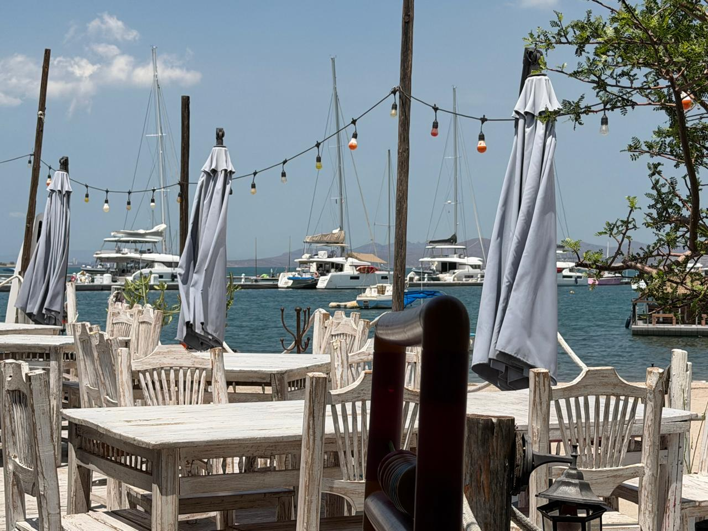
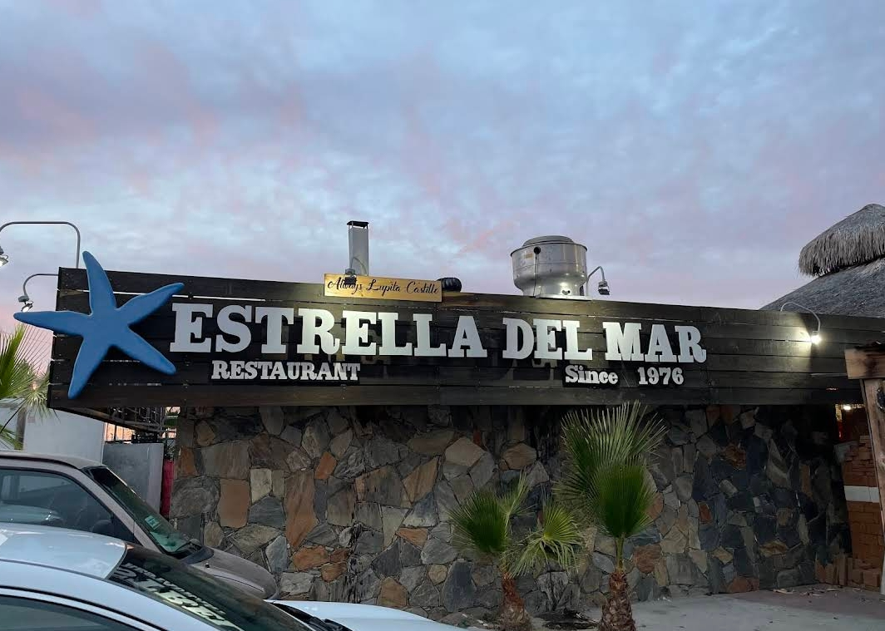

★★★★★Google Maps
«Buen ambiente, comida rica y bien cobrada, el tener el mar enfrente es el plus!»
Oscar Rafael Palacios Villarreal · Opinión mostrada como hace 3 meses

COCINA DEL MAR · DESDE 1976
Mariscos, una mesa frente al agua y el tiempo para disfrutarlos. Nos vemos donde empieza el malecón.

UN NOMBRE LIGADO AL MARNUESTRA ESENCIA
Estrella del Mar se encuentra en el Paseo Malecón, a un lado de la marina. La piedra de su fachada, su estrella azul y las mesas junto al agua forman parte del carácter del lugar.
«Since 1976» se lee en su rótulo y en su carta: una referencia a sus raíces que hoy acompaña una cocina de mariscos, tostadas, ceviches, pizzas y pastas.
Una mesa para reunirse, mirar los barcos y compartir el sabor de La Paz.
El año 1976 aparece en la identidad del restaurante. Los nombres de sus fundadores y el relato de cómo comenzó están pendientes de documentarse con el equipo de Estrella del Mar.
ASÍ SE VIVE ESTRELLA DEL MAR
Fotografías consultadas en Google Maps. Terraza: Gabriela Vera; fachada y platillo: autoría indicada en la ficha de origen.
VOCES DE QUIENES NOS VISITAN
Consulta del 19 de octubre de 2026.
La valoración puede cambiar.
«Buen ambiente, comida rica y bien cobrada, el tener el mar enfrente es el plus!»
Oscar Rafael Palacios Villarreal · Opinión mostrada como hace 3 meses
Pams Corona destacó el lugar, pero señaló que durante su visita no había postres preparados.
Yohaly Medina elogió la vista y expresó inconformidad con el sabor y la cocción de su filete.
Selección de opiniones públicas. Los resúmenes conservan el sentido de cada reseña; no representan todas las experiencias.
TE ESPERAMOS EN EL MALECÓN
P.º Malecón 2415, Zona Comercial
23006 La Paz, Baja California Sur
Lunes a domingo
11:00 a. m. — 11:00 p. m.
Horario publicado en Google Maps. Confirma cambios por días festivos y disponibilidad de mesas directamente por teléfono.
ANTES DE VISITARNOS
Llama al 612 128 9266. El restaurante confirmará la disponibilidad; esta página no registra reservaciones.
Tostadas y ceviches, tiraditos, camarones, sopas, pizzas, pastas, cortes y postres. Usa las categorías y el buscador para explorar los platillos transcritos.
La ficha de Google Maps indica una entrada accesible para personas en silla de ruedas. Consulta por teléfono las condiciones de acceso a la terraza.
Dirección, teléfono, horario, valoración, reseñas y fotos: Google Maps, consultado el 19 de octubre de 2026. Carta: imágenes públicas recopiladas en Restaurant Guru. El año 1976 aparece tanto en la fachada como en el menú. La historia de los fundadores aún no está documentada en esta página.